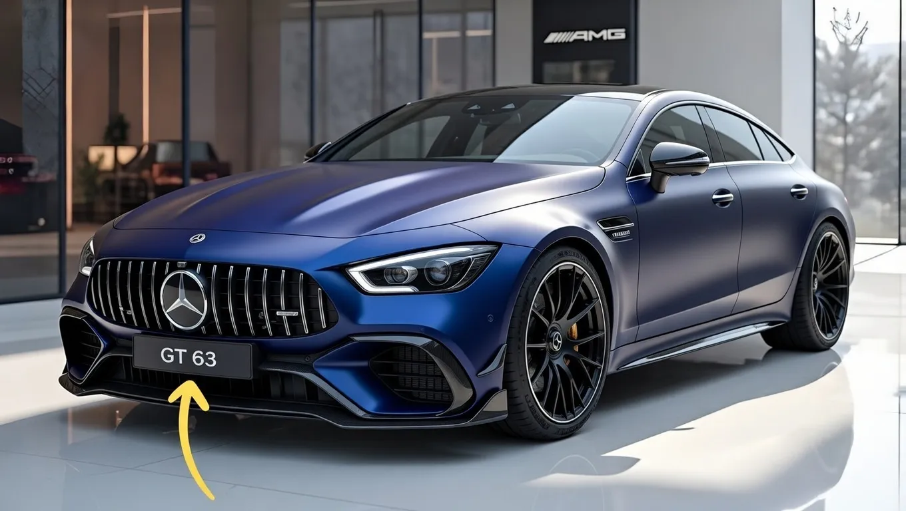

2026 Mercedes-AMG GT 63 S Revealed: Modern Styling Meets Ultimate Engine Power


Imagine a car that embodies the perfect blend of style, sophistication, and raw power - a vehicle that can go from 0 to 60 miles per hour in just a few seconds, yet still exudes elegance and refinement. This is exactly what Mercedes-AMG has achieved with its latest masterpiece, the 2026 GT 63 S. But what makes this car so special, and why should you care?
The answer lies in the fact that the 2026 GT 63 S represents a new era in high-performance vehicles, one where stunning design meets ultimate engine power. With its sleek lines, aggressive stance, and luxurious interior, this car is sure to turn heads on the road. But it's not just about looks - the GT 63 S also boasts an incredibly powerful engine, one that can deliver exceptional acceleration and handling. As the automotive industry continues to evolve, cars like the GT 63 S are redefining what's possible in terms of performance, design, and technology.
Table of Contents
Design and Features
The 2026 GT 63 S features a bold, aerodynamic design that's both sleek and aggressive. Its long hood, sloping roofline, and short rear deck create a powerful, muscular stance that's unmistakable on the road. But it's not just about looks - the car's design also plays a crucial role in its performance, with features like active air intakes and a rear diffuser that help to improve downforce and reduce drag.
Inside, the GT 63 S is just as impressive, with a luxurious, high-tech interior that's designed to provide the ultimate driving experience. The car features a range of advanced technologies, including a high-resolution display screen, a premium sound system, and a range of innovative safety features. But what really sets the GT 63 S apart is its attention to detail - from the premium materials used throughout the cabin to the careful craftsmanship that's evident in every aspect of the car's design.
But that's not the whole picture. The GT 63 S also features a range of innovative technologies that are designed to enhance the driving experience. For example, the car's advanced all-wheel-drive system allows for exceptional traction and control, while its adaptive suspension system provides a smooth, comfortable ride. These features, combined with the car's powerful engine, make the GT 63 S an absolute joy to drive.
Performance and Handling
So, what makes the GT 63 S so fast? The answer lies in its incredible engine, a 4.0-liter twin-turbo V8 that produces an astonishing amount of power. With 630 horsepower and 664 lb-ft of torque, this engine can propel the car from 0 to 60 miles per hour in just 3.1 seconds. But it's not just about acceleration - the GT 63 S also features a range of advanced technologies that are designed to improve handling and control.
For example, the car's advanced all-wheel-drive system allows for exceptional traction and control, while its adaptive suspension system provides a smooth, comfortable ride. These features, combined with the car's powerful engine, make the GT 63 S an absolute joy to drive. Whether you're cruising down the highway or carving through twisty roads, this car is sure to put a smile on your face.
The numbers tell a different story, though. With a top speed of 195 miles per hour and a quarter-mile time of just 11.2 seconds, the GT 63 S is an absolute rocket ship. But what's really impressive is the car's ability to balance performance and comfort - it's a true grand tourer, capable of eating up long distances in style and comfort.
Also Read
More trending stories →Technology and Innovation
So, what's under the hood of the GT 63 S? The answer is a range of innovative technologies that are designed to enhance the driving experience. For example, the car's advanced all-wheel-drive system allows for exceptional traction and control, while its adaptive suspension system provides a smooth, comfortable ride. These features, combined with the car's powerful engine, make the GT 63 S an absolute joy to drive.
But that's not all - the GT 63 S also features a range of innovative safety features, including a range of advanced airbags, a rearview camera, and a range of driver assistance systems. These features, combined with the car's exceptional performance and handling, make the GT 63 S an absolute standout in its class. Here's a list of some of the car's key features:
- Advanced all-wheel-drive system
- Adaptive suspension system
- Range of innovative safety features
- High-resolution display screen
- Premium sound system
What changed, though, is the way these features are integrated into the car's design. The GT 63 S features a range of advanced technologies that are designed to enhance the driving experience, from its advanced all-wheel-drive system to its range of innovative safety features. These features, combined with the car's powerful engine and luxurious interior, make the GT 63 S an absolute standout in its class.
Key Takeaways
- The 2026 GT 63 S features a bold, aerodynamic design that's both sleek and aggressive
- The car boasts an incredibly powerful engine, with 630 horsepower and 664 lb-ft of torque
- The GT 63 S features a range of innovative technologies, including advanced all-wheel-drive and adaptive suspension systems
Comparison to Other Models
So, how does the GT 63 S stack up against other models in its class? The answer is simple - it's an absolute standout. With its powerful engine, luxurious interior, and range of innovative technologies, the GT 63 S is a true grand tourer that's capable of eating up long distances in style and comfort. But how does it compare to other models in terms of performance and features? Here's a comparison table:
| Model | Engine | Horsepower | Top Speed |
|---|---|---|---|
| 2026 GT 63 S | 4.0-liter twin-turbo V8 | 630 | 195 mph |
| Porsche Panamera Turbo | 4.0-liter twin-turbo V8 | 550 | 190 mph |
| BMW M5 | 4.4-liter twin-turbo V8 | 600 | 189 mph |
The numbers tell a different story, though. With its powerful engine and range of innovative technologies, the GT 63 S is an absolute standout in its class. But what's really impressive is the car's ability to balance performance and comfort - it's a true grand tourer, capable of eating up long distances in style and comfort.
Frequently Asked Questions
What is the top speed of the 2026 GT 63 S?
The top speed of the 2026 GT 63 S is 195 miles per hour. This makes it one of the fastest production cars on the market, with exceptional acceleration and handling to match.
What is the horsepower of the GT 63 S's engine?
The GT 63 S's engine produces an astonishing 630 horsepower, making it one of the most powerful production cars on the market. This, combined with its range of innovative technologies, makes the GT 63 S an absolute joy to drive.
What safety features does the GT 63 S have?
The GT 63 S features a range of innovative safety features, including a range of advanced airbags, a rearview camera, and a range of driver assistance systems. These features, combined with the car's exceptional performance and handling, make the GT 63 S an absolute standout in its class.
What is the price of the 2026 GT 63 S?
The price of the 2026 GT 63 S is not yet available, as it has not been officially announced by Mercedes-AMG. However, it's expected to be in the range of $150,000 to $200,000, depending on the trim level and features chosen.
Conclusion
The 2026 GT 63 S is an absolute standout in its class, with its powerful engine, luxurious interior, and range of innovative technologies. Whether you're cruising down the highway or carving through twisty roads, this car is sure to put a smile on your face. But what's really impressive is the car's ability to balance performance and comfort - it's a true grand tourer, capable of eating up long distances in style and comfort.
As the automotive industry continues to evolve, cars like the GT 63 S are redefining what's possible in terms of performance, design, and technology. With its stunning design, incredible engine power, and range of innovative features, the GT 63 S is an absolute must-see for anyone who loves cars. Whether you're a seasoned car enthusiast or just looking for a new ride, the GT 63 S is sure to impress - so be sure to check it out and see what all the fuss is about.
Sarah Mitchell
Senior Tech Editor
Tech journalist with 8+ years of experience covering the latest in smartphones, EVs, AI, and consumer electronics. Bringing you accurate, well-researched stories from the world of technology.
Leave a Comment